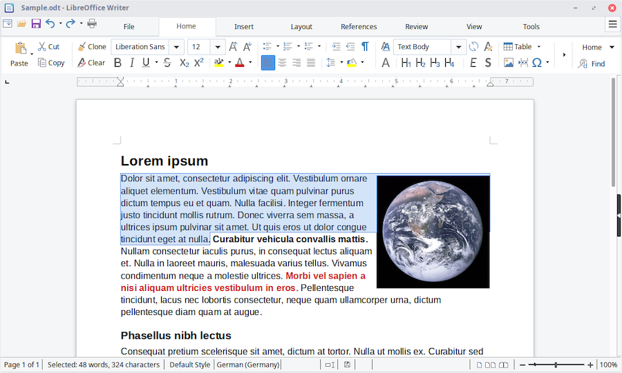
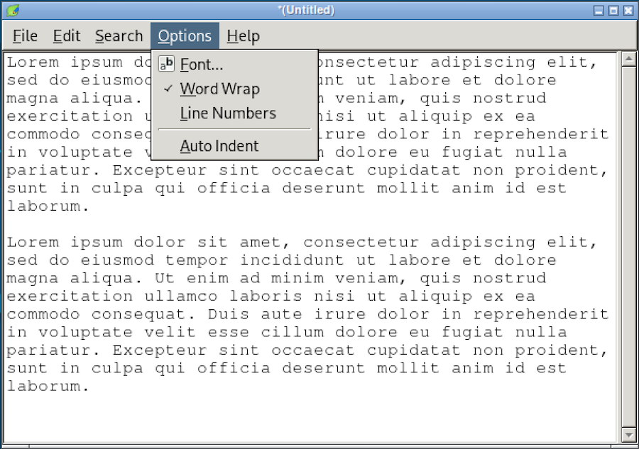
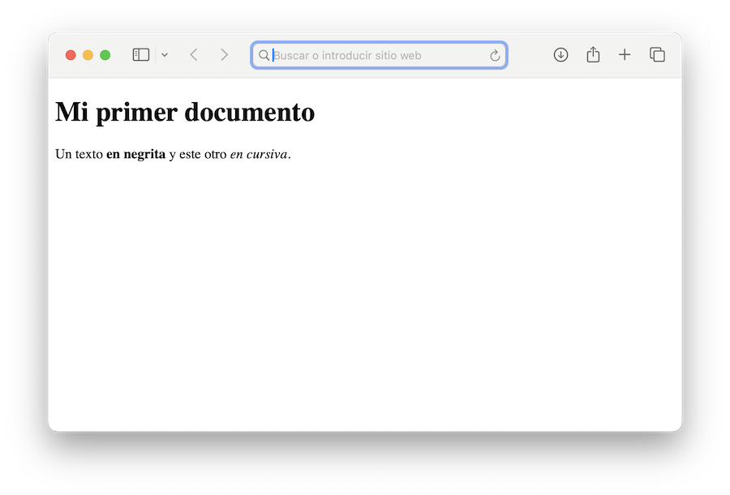

Anatomía de una página web¶
Archivos web¶
Dado que vamos a mostrar nuestra documentación en forma de páginas web, comencemos por "destripar" lo que obtenemos cuando navegamos por la red. Típicamente, toda sesión comienza introduciendo una URL en nuestro navegador:
https://www.google.com/
Lo que sucede en ese momento es que nuestra compañía de comunicaciones (telefónica, u otra) actúa como Proveedor de Servicios de Internet (ISP) y desencadena todo el proceso para traducir la URL, localizar el servidor web donde se aloja la página (en este ejemplo, el de Google) y descargar los contenidos, que se visualizarán en nuestro navegador.
Inicialmente se descarga la página principal, o la solicitada, si la URL lo especifica. A medida que vayamos pulsando en los enlaces que hay en el texto, se irán descargando y mostrando otras páginas.
Por lo tanto, cada página web es, en esencia, un archivo de texto que se obtiene por separado. Si incluye imágenes u otros elementos audiovisuales, estos se descargan en paralelo, como archivos independientes. El navegador tomará los ficheros y hará una composición "al vuelo" para obtener una presentación a visualizar.
Supongamos, como ejemplo, un sitio web que tiene:
- una página principal, con enlaces al resto
- dos páginas adicionales, página 2 y página 3, a las que se accede desde la página principal, y que tienen enlaces de vuelta a esta
- la página 3 muestra unas imágenes, que se descargan por separado.
Esquemáticamente sería:
flowchart TD
A[Página 1 principal<br>que contiene un texto<br>con enlaces a otras páginas];
A --> |descarga de página 2| B[Página 2];
A --> |descarga de página 3| C[Página 3 con imágenes<br>que se descargan en paralelo]
A --> |descarga junto a página 3| D[imagen1.jpg<br>imagen2.jpg];
B --> |enlace de vuelta| A;
C --> E[Página 3 resultante];
D --> E
E --> |enlace de vuelta| A;
Las páginas web son archivos que solo contienen texto. Los elementos gráficos se alojan en el servidor como ficheros separados, y se descargan junto a la página que los muestra.
Tipos de archivo¶
En líneas generales, existen dos tipos de archivos:
-
archivos "binarios", formados por ceros y unos que representan imágenes, sonido, etc.
-
archivos de texto, que consisten exclusivamente en una secuencia de caracteres.
Para crear documentos de texto podemos utilizar dos tipos de programa:
-
Editores Rich text format, donde los documentos incluyen texto, imágenes, tipografía, y toda clase de elementos gráficos. Típicamente, estos ficheros se suelen guardar en formato binario.

-
Editores Plain text, que no admiten elementos gráficos ni información añadida sobre estilos de letra:

Plain text
En algunos manuales técnicos, a los archivos plain text se les llama ficheros de "texto plano". Realmente no tiene nada que ver con que sea plano o redondo. La traducción correcta sería "texto sin más".
Existe un caso especial de archivos "plain text". Son aquellos que contienen anotaciones que acompañan al texto, con información sobre formato de presentación. A estas anotaciones se les llama "marcas".
Las páginas web son archivos plain text con marcas. Estas facilitan al navegador todo lo que tiene que saber para establecer el aspecto final de la visualización y la forma de insertar en el documento el resto de archivos (imágenes, etc) descargados.
Marcas¶
Supongamos, por ejemplo, que una página web muestra el siguiente contenido:
El archivo que se descarga es un texto que contiene lo siguiente:
Un texto <b>en negrita</b> y este otro <i>en cursiva</i>.
Las marcas de una página web se denominan etiquetas, y se delimitan entre dos ángulos < >. El navegador no las muestra en la pantalla, pero las utilizará para determinar el formato de presentación de la página. En nuestro ejemplo:
- La etiqueta
<b>indica comienzo del texto en negrita (bold). - La etiqueta
</b>indica fin del texto en negrita. - La etiqueta
<i>indica comienzo del texto en cursiva (itálica). - La etiqueta
</i>indica fin del texto en cursiva.
Estas etiquetas han de respetar unas reglas de sintaxis que se denominan lenguaje de marcas. Existen numerosos lenguajes de marcado. Véase Wikipedia. Las páginas web utilizan una sintaxis denominada HTML, abreviatura de HyperText Markup Language.
En una primera aproximación, se podría decir que, para crear una página web, todo lo que necesitamos es un editor de plain text para escribir texto que lleve etiquetas HTML. Pero veamos esto con más detalle.
Anatomía de un archivo HTML¶
Volvamos a nuestro ejemplo. Supongamos que queremos mostrar lo siguiente en el navegador:

El contenido del archivo descargado sería algo así como:
<!DOCTYPE html>
<html>
<body>
<h1>Mi primer documento</h1>
<p>Un texto <b>en negrita</b>
y este otro <i>en cursiva</i>.
</p>
</body>
</html>
Para ensayar con el formato HTML, probemos a guardar este texto como archivo en nuestro disco duro. Le tenemos que dar un nombre con sufijo .html, por ejemplo, prueba.hmtl. Al hacer doble clic sobre el fichero, se visualizará en la ventana del navegador web.
Editores de plain text
Para editar archivos plain text, Windows proporciona un pequeño editor llamado "Bloc de notas". ¡Cuidado al guardar el archivo!. El editor suele añadir automáticamente la extensión .txt al nombre, por lo que es una característica que debemos desactivar. Las páginas web llevan el sufijo .html
Los ordenadores Mac vienen con un sencillo editor llamado TextEdit, que admite archivos en formato RTF (por defecto) o de texto simple. Debemos cambiar la configuración del editor para que se guarden como texto sin formato.
Los sistemas Linux suelen proporcionar de serie uno o varios editores, pero eso depende de la distribución instalada, Ubuntu, Fedora, etc.
Si no nos convence nuestro editor por defecto, tenemos cientos de ellos a nuestra disposición en la red. Véase Wikipedia
Analicemos el contenido de este primer archivo de texto. Algunas líneas están sangradas (espaciado a la izquierda) y otras están en blanco. Todo eso es puramente decorativo, y será ignorado por nuestro navegador. El resultado final sería el mismo si el contenido del archivo fuera:
<!DOCTYPE html><html><body><h1>Mi primer documento</h1>
<p>Un texto <b>en negrita</b>y este otro <i>en cursiva</i>.
</p></body></html>
...pero al usar el editor de textos, resulta más cómodo utilizar un formato que sea amigable.
Veamos ahora el significado de las etiquetas. Todo documento web suele empezar con <!DOCTYPE html>, lo que indica que se trata de un archivo en formato HTML. Las etiquetas <html> y </html> delimitan el contenido del archivo. Los diferentes bloques de texto se suelen delimitar con una etiqueta de apertura y una de cierre, que es la misma, pero añadiendo una barra /.
El contenido de una página web puede estar formado por dos secciones:
<html>
<head>
Cabecera del documento con información sobre el mismo (opcional)
</head>
<body>
Cuerpo del documento con el texto a mostrar
</body>
</html>
Los párrafos del documento se colocan en la sección <body>, y cada uno de ellos se delimita entre etiquetas <p> y </p>. El navegador unirá todas las líneas de un párrafo en una sola, e insertará un espaciado entre párrafos. Es decir, es lo mismo escribir:
<p>Texto del párrafo 1</p><p>Texto del párrafo 2</p>
que
<p>Texto del
párrafo 1</p>
<p>Texto del párrafo 2</p>
ya que el navegador ignora todo espaciado extra y concatena las líneas de texto, pero separa visualmente los párrafos:
Texto del párrafo 1
Texto del párrafo 2
Si sustituimos las etiquetas <p> por <h1>, obtendremos un párrafo de título del documento, mostrado con un tipo de letra especial:
<h1>Mi primer documento</h1>
Los párrafos de título pueden añadirse con varios niveles de importancia:
<h1>para el título principal del documento<h2>para títulos de secciones<h3>para títulos de subsecciones
... y así sucesivamente, hasta llegar a <h6>. El resaltado va de más a menos, un función de la importancia del párrafo de título.
Estándares web
El formato HTML establece unas reglas de escritura que pueden parecer bastante rigurosas. En realidad han sido concebidas para describir con total exactitud el contenido de una página. En algunas situaciones los navegadores suelen ser bastante permisivos, asumiendo algunos valores por defecto, si falta alguna etiqueta, o ignorando las etiquetas mal escritas, sin mostrar ningún mensaje de error.
Tanto el formato HTML como otros estándares de Internet están regulados por el World Wide Web Consortium, autoridad mundial que publica recomendaciones y estándares para asegurar el buen funcionamiento de la web. Este consorcio fue creado en octubre de 1994.
El formato markdown¶
Redactar un documento en formato HTML puede llegar a ser bastante farragoso, con tanta etiqueta. En su lugar, es costumbre utilizar otros lenguajes de marcas más sencillos. Uno de los más populares es el formato Markdown. Nuestro archivo quedaría así:
# Mi primer documento
Un texto **en negrita**
y este otro *en cursiva*.
En formato markdown tenemos lo siguiente:
- Los párrafos se separan con una línea en blanco. No necesitamos etiquetas
<p>para delimitarlos. - Las líneas que forman un párrafo se unen en una sola, como sucede en HTML.
- Los párrafos de título (cabeceras) se marcan anteponiendo un símbolo
#. - El texto se resalta delimitándolo entre asteriscos (cursiva) o doble asterisco (negrita).
De esta forma, se suele decir que el formato HTML sirve para representar contenidos, y el formato markdown para redactarlos. Tendremos dos archivos:
mipaginaweb.md, creado con un editor de plain textmipaginaweb.html, creado con un programa conversor. Yo utilizo uno llamado MkDocs, que toma los archivos markdown y genera los HTML para subirlos posteriormente al servidor web.
Uso de etiquetas HTML¶
El uso del formato markdown hace que la tarea de edición del contenido de una página web resulte más simple. Pero tiene sus limitaciones. La sintaxis de markdown no cubre todas las posibilidades que ofrece HTML.
Por ejemplo, supongamos que queremos introducir saltos de línea en mitad de un párrafo:
La canción de San Fermín:
Uno de enero
dos de febrero
tres de marzo
...
Nótese que entre líneas no queremos espaciado extra, como sucede entre párrafos. Pero si escribimos en formato markdown:
La canción de San Fermín:
Uno de enero
dos de febrero
tres de marzo
...
Las líneas que forman el párrafo se unirán en una sola:
La canción de San Fermín:
Uno de enero dos de febrero tres de marzo ...
En los archivos HTML podemos forzar un salto de línea mediante la etiqueta <br>, abreviatura de break:
<p>La canción de San Fermín:</p>
<p>
Uno de enero<br>
dos de febrero<br>
tres de marzo<br>
...
</p>
En un texto markdown, podemos insertar manualmente etiquetas HTML que, con algunas excepciones, serán respetadas, salvo que entren en contradicción con lo generado durante el proceso de conversión:
# La canción de San Fermín:
Uno de enero<br>
dos de febrero<br>
tres de marzo<br>
...